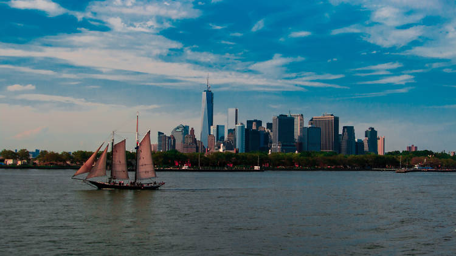
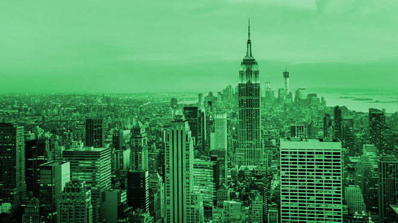

New York City, United States of American
What i would like to experience is the snow weather as the city gets about 15 times more snow than the South Pole every year (this shouldn't be too surprising though because Antarctica is a desert and therefore receives very little precipitation). I would
also like to visit the Central Park in the city to take more lovely pictures. The Statue of Liberty (Liberty Enlightening the World; French: La Liberté éclairant le monde) is a colossal neoclassical sculpture on Liberty Island in New
York Harbor in New York City, in the United States. The copper statue, designed by Frédéric Auguste Bartholdi, a French sculptor, was built by Gustave Eiffel and dedicated on October 28, 1886. It was a gift to the United States from
the people of France. The statue is of a robed female figure representing Libertas, the Roman goddess, who bears a torch and a tabula ansata (a tablet evoking the law) upon which is inscribed the date of the American Declaration of
Independence, July 4, 1776. A broken chain lies at her feet.The statue is an icon of freedom and of the United States, and was a welcoming sight to immigrants arriving from abroad.